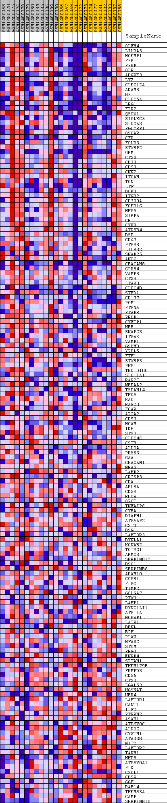
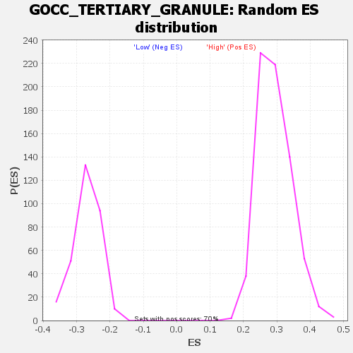

Profile of the Running ES Score & Positions of GeneSet Members on the Rank Ordered List
| Dataset | WG6v3.CYGB.cls#High_versus_Low.CYGB.cls#High_versus_Low_repos |
| Phenotype | CYGB.cls#High_versus_Low_repos |
| Upregulated in class | High |
| GeneSet | GOCC_TERTIARY_GRANULE |
| Enrichment Score (ES) | 0.6485465 |
| Normalized Enrichment Score (NES) | 2.207415 |
| Nominal p-value | 0.0 |
| FDR q-value | 0.0 |
| FWER p-Value | 0.0 |
| SYMBOL | TITLE | RANK IN GENE LIST | RANK METRIC SCORE | RUNNING ES | CORE ENRICHMENT | |
|---|---|---|---|---|---|---|
| 1 | OLFM4 | OLFM4 | 95 | 0.359 | 0.0261 | Yes |
| 2 | LILRA3 | LILRA3 | 98 | 0.355 | 0.0567 | Yes |
| 3 | MCEMP1 | MCEMP1 | 113 | 0.340 | 0.0854 | Yes |
| 4 | FPR1 | FPR1 | 132 | 0.319 | 0.1121 | Yes |
| 5 | PPBP | PPBP | 157 | 0.286 | 0.1356 | Yes |
| 6 | OLR1 | OLR1 | 207 | 0.253 | 0.1549 | Yes |
| 7 | ADGRE3 | ADGRE3 | 214 | 0.247 | 0.1760 | Yes |
| 8 | LYZ | LYZ | 238 | 0.235 | 0.1951 | Yes |
| 9 | CLEC12A | CLEC12A | 251 | 0.229 | 0.2143 | Yes |
| 10 | ADAM8 | ADAM8 | 261 | 0.224 | 0.2332 | Yes |
| 11 | HP | HP | 269 | 0.220 | 0.2519 | Yes |
| 12 | CLEC5A | CLEC5A | 273 | 0.219 | 0.2707 | Yes |
| 13 | LRG1 | LRG1 | 274 | 0.219 | 0.2897 | Yes |
| 14 | FPR2 | FPR2 | 286 | 0.213 | 0.3075 | Yes |
| 15 | QSOX1 | QSOX1 | 298 | 0.206 | 0.3248 | Yes |
| 16 | SIGLEC5 | SIGLEC5 | 312 | 0.198 | 0.3413 | Yes |
| 17 | SLC2A3 | SLC2A3 | 315 | 0.198 | 0.3583 | Yes |
| 18 | PGLYRP1 | PGLYRP1 | 369 | 0.183 | 0.3714 | Yes |
| 19 | OSCAR | OSCAR | 449 | 0.167 | 0.3818 | Yes |
| 20 | CFP | CFP | 459 | 0.166 | 0.3957 | Yes |
| 21 | FOLR3 | FOLR3 | 480 | 0.161 | 0.4086 | Yes |
| 22 | STXBP2 | STXBP2 | 490 | 0.159 | 0.4219 | Yes |
| 23 | ORM1 | ORM1 | 522 | 0.154 | 0.4337 | Yes |
| 24 | CTSS | CTSS | 535 | 0.151 | 0.4461 | Yes |
| 25 | CD33 | CD33 | 551 | 0.148 | 0.4581 | Yes |
| 26 | CD53 | CD53 | 616 | 0.140 | 0.4670 | Yes |
| 27 | CNN2 | CNN2 | 622 | 0.140 | 0.4788 | Yes |
| 28 | ITGAM | ITGAM | 630 | 0.139 | 0.4904 | Yes |
| 29 | TCN1 | TCN1 | 633 | 0.138 | 0.5023 | Yes |
| 30 | LTF | LTF | 689 | 0.132 | 0.5109 | Yes |
| 31 | DOK3 | DOK3 | 756 | 0.125 | 0.5182 | Yes |
| 32 | ITGB2 | ITGB2 | 786 | 0.122 | 0.5273 | Yes |
| 33 | CD300A | CD300A | 838 | 0.116 | 0.5347 | Yes |
| 34 | FCER1G | FCER1G | 856 | 0.114 | 0.5437 | Yes |
| 35 | MMP9 | MMP9 | 947 | 0.108 | 0.5483 | Yes |
| 36 | SIRPA | SIRPA | 948 | 0.107 | 0.5576 | Yes |
| 37 | CR1 | CR1 | 1063 | 0.099 | 0.5603 | Yes |
| 38 | CYBB | CYBB | 1097 | 0.097 | 0.5670 | Yes |
| 39 | ATP8B4 | ATP8B4 | 1114 | 0.096 | 0.5745 | Yes |
| 40 | DSP | DSP | 1136 | 0.095 | 0.5817 | Yes |
| 41 | CD47 | CD47 | 1168 | 0.093 | 0.5881 | Yes |
| 42 | PTPRB | PTPRB | 1189 | 0.092 | 0.5951 | Yes |
| 43 | LILRB2 | LILRB2 | 1367 | 0.082 | 0.5930 | Yes |
| 44 | SNAP25 | SNAP25 | 1382 | 0.081 | 0.5993 | Yes |
| 45 | ANO6 | ANO6 | 1408 | 0.080 | 0.6049 | Yes |
| 46 | CEACAM8 | CEACAM8 | 1417 | 0.079 | 0.6113 | Yes |
| 47 | GPR84 | GPR84 | 1439 | 0.079 | 0.6171 | Yes |
| 48 | VAMP8 | VAMP8 | 1472 | 0.077 | 0.6221 | Yes |
| 49 | CTSH | CTSH | 1500 | 0.076 | 0.6272 | Yes |
| 50 | LTA4H | LTA4H | 1604 | 0.072 | 0.6281 | Yes |
| 51 | CLEC4D | CLEC4D | 1700 | 0.068 | 0.6291 | Yes |
| 52 | STBD1 | STBD1 | 1709 | 0.068 | 0.6346 | Yes |
| 53 | CD177 | CD177 | 1760 | 0.067 | 0.6377 | Yes |
| 54 | PGM1 | PGM1 | 1804 | 0.065 | 0.6412 | Yes |
| 55 | PTPN6 | PTPN6 | 2001 | 0.059 | 0.6361 | Yes |
| 56 | PTAFR | PTAFR | 2150 | 0.054 | 0.6331 | Yes |
| 57 | PRCP | PRCP | 2280 | 0.051 | 0.6308 | Yes |
| 58 | CYFIP1 | CYFIP1 | 2527 | 0.046 | 0.6220 | Yes |
| 59 | HBB | HBB | 2547 | 0.045 | 0.6249 | Yes |
| 60 | SNAP23 | SNAP23 | 2569 | 0.045 | 0.6277 | Yes |
| 61 | ITGAX | ITGAX | 2617 | 0.044 | 0.6291 | Yes |
| 62 | VAMP1 | VAMP1 | 2661 | 0.043 | 0.6306 | Yes |
| 63 | GSDMD | GSDMD | 2714 | 0.042 | 0.6315 | Yes |
| 64 | YPEL5 | YPEL5 | 2751 | 0.041 | 0.6331 | Yes |
| 65 | FTH1 | FTH1 | 2771 | 0.041 | 0.6356 | Yes |
| 66 | STXBP3 | STXBP3 | 2783 | 0.040 | 0.6386 | Yes |
| 67 | PKP1 | PKP1 | 2786 | 0.040 | 0.6419 | Yes |
| 68 | TBC1D10C | TBC1D10C | 2800 | 0.040 | 0.6447 | Yes |
| 69 | SLC11A1 | SLC11A1 | 2840 | 0.039 | 0.6461 | Yes |
| 70 | RAP2C | RAP2C | 2859 | 0.039 | 0.6485 | Yes |
| 71 | NBEAL2 | NBEAL2 | 3026 | 0.036 | 0.6431 | No |
| 72 | TSPAN14 | TSPAN14 | 3118 | 0.035 | 0.6413 | No |
| 73 | TMC6 | TMC6 | 3135 | 0.034 | 0.6435 | No |
| 74 | RAC1 | RAC1 | 3136 | 0.034 | 0.6464 | No |
| 75 | RAP2B | RAP2B | 3294 | 0.032 | 0.6410 | No |
| 76 | FCAR | FCAR | 3348 | 0.031 | 0.6409 | No |
| 77 | AP2A2 | AP2A2 | 3371 | 0.030 | 0.6424 | No |
| 78 | CD93 | CD93 | 3383 | 0.030 | 0.6445 | No |
| 79 | MGAM | MGAM | 3481 | 0.029 | 0.6419 | No |
| 80 | IDH1 | IDH1 | 3572 | 0.028 | 0.6397 | No |
| 81 | STX7 | STX7 | 3957 | 0.024 | 0.6218 | No |
| 82 | CLEC4C | CLEC4C | 3972 | 0.024 | 0.6232 | No |
| 83 | CSTB | CSTB | 4050 | 0.023 | 0.6212 | No |
| 84 | ALDOA | ALDOA | 4068 | 0.023 | 0.6223 | No |
| 85 | PRSS3 | PRSS3 | 4116 | 0.022 | 0.6218 | No |
| 86 | GAA | GAA | 4388 | 0.020 | 0.6094 | No |
| 87 | CEACAM1 | CEACAM1 | 4778 | 0.017 | 0.5907 | No |
| 88 | NRAS | NRAS | 4862 | 0.016 | 0.5878 | No |
| 89 | LAMP2 | LAMP2 | 4954 | 0.015 | 0.5844 | No |
| 90 | CRISP3 | CRISP3 | 4959 | 0.015 | 0.5855 | No |
| 91 | CDA | CDA | 4974 | 0.015 | 0.5861 | No |
| 92 | ARL8A | ARL8A | 5005 | 0.015 | 0.5859 | No |
| 93 | CD58 | CD58 | 5028 | 0.015 | 0.5860 | No |
| 94 | RHOA | RHOA | 5090 | 0.014 | 0.5841 | No |
| 95 | QPCT | QPCT | 5477 | 0.012 | 0.5651 | No |
| 96 | TNFAIP6 | TNFAIP6 | 5523 | 0.012 | 0.5638 | No |
| 97 | CYBA | CYBA | 5575 | 0.011 | 0.5621 | No |
| 98 | DIAPH1 | DIAPH1 | 5632 | 0.011 | 0.5602 | No |
| 99 | ATP6AP2 | ATP6AP2 | 5792 | 0.010 | 0.5528 | No |
| 100 | CST3 | CST3 | 5823 | 0.010 | 0.5522 | No |
| 101 | DSG1 | DSG1 | 6313 | 0.008 | 0.5275 | No |
| 102 | LAMTOR3 | LAMTOR3 | 6334 | 0.008 | 0.5271 | No |
| 103 | DYNLL1 | DYNLL1 | 6383 | 0.008 | 0.5253 | No |
| 104 | KCNAB2 | KCNAB2 | 6417 | 0.008 | 0.5243 | No |
| 105 | TCIRG1 | TCIRG1 | 6770 | 0.006 | 0.5065 | No |
| 106 | ARMC8 | ARMC8 | 7078 | 0.005 | 0.4910 | No |
| 107 | SERPINB12 | SERPINB12 | 7762 | 0.003 | 0.4558 | No |
| 108 | DSC1 | DSC1 | 8060 | 0.002 | 0.4405 | No |
| 109 | SERPINB6 | SERPINB6 | 8653 | -0.000 | 0.4098 | No |
| 110 | ADAM10 | ADAM10 | 8690 | -0.000 | 0.4080 | No |
| 111 | COPB1 | COPB1 | 8774 | -0.001 | 0.4037 | No |
| 112 | FLG2 | FLG2 | 8909 | -0.001 | 0.3969 | No |
| 113 | TIMP2 | TIMP2 | 8945 | -0.001 | 0.3952 | No |
| 114 | GOLGA7 | GOLGA7 | 8956 | -0.001 | 0.3948 | No |
| 115 | PTX3 | PTX3 | 8962 | -0.001 | 0.3946 | No |
| 116 | LAMP1 | LAMP1 | 9305 | -0.002 | 0.3771 | No |
| 117 | DYNC1LI1 | DYNC1LI1 | 9509 | -0.003 | 0.3668 | No |
| 118 | ATP11A | ATP11A | 9572 | -0.003 | 0.3639 | No |
| 119 | NCKAP1L | NCKAP1L | 9771 | -0.004 | 0.3540 | No |
| 120 | LAIR1 | LAIR1 | 9844 | -0.004 | 0.3506 | No |
| 121 | DBNL | DBNL | 10100 | -0.005 | 0.3378 | No |
| 122 | B2M | B2M | 11132 | -0.009 | 0.2850 | No |
| 123 | PLAU | PLAU | 12074 | -0.013 | 0.2373 | No |
| 124 | NFASC | NFASC | 12203 | -0.013 | 0.2318 | No |
| 125 | STOM | STOM | 12428 | -0.014 | 0.2214 | No |
| 126 | PRG3 | PRG3 | 12842 | -0.016 | 0.2013 | No |
| 127 | ENPP4 | ENPP4 | 12906 | -0.016 | 0.1995 | No |
| 128 | SPTAN1 | SPTAN1 | 13051 | -0.017 | 0.1935 | No |
| 129 | TMEM179B | TMEM179B | 13193 | -0.018 | 0.1877 | No |
| 130 | FRMPD3 | FRMPD3 | 13372 | -0.019 | 0.1801 | No |
| 131 | CD55 | CD55 | 13875 | -0.022 | 0.1560 | No |
| 132 | CTSD | CTSD | 14154 | -0.024 | 0.1436 | No |
| 133 | LGALS3 | LGALS3 | 14366 | -0.026 | 0.1349 | No |
| 134 | HGSNAT | HGSNAT | 14493 | -0.027 | 0.1307 | No |
| 135 | UBR4 | UBR4 | 14552 | -0.027 | 0.1300 | No |
| 136 | LAMTOR1 | LAMTOR1 | 14605 | -0.028 | 0.1297 | No |
| 137 | CANT1 | CANT1 | 15211 | -0.033 | 0.1011 | No |
| 138 | ILF2 | ILF2 | 15378 | -0.034 | 0.0954 | No |
| 139 | PTPRN2 | PTPRN2 | 15507 | -0.035 | 0.0919 | No |
| 140 | ASAH1 | ASAH1 | 15581 | -0.036 | 0.0912 | No |
| 141 | ATP6V0C | ATP6V0C | 15672 | -0.037 | 0.0897 | No |
| 142 | ALDOC | ALDOC | 15680 | -0.037 | 0.0925 | No |
| 143 | CYSTM1 | CYSTM1 | 15690 | -0.037 | 0.0952 | No |
| 144 | ATAD3B | ATAD3B | 15853 | -0.039 | 0.0902 | No |
| 145 | NIT2 | NIT2 | 15876 | -0.039 | 0.0924 | No |
| 146 | LAMTOR2 | LAMTOR2 | 16137 | -0.042 | 0.0825 | No |
| 147 | TARM1 | TARM1 | 16143 | -0.042 | 0.0859 | No |
| 148 | MMP8 | MMP8 | 16507 | -0.046 | 0.0711 | No |
| 149 | ATP6V0A1 | ATP6V0A1 | 17107 | -0.054 | 0.0447 | No |
| 150 | PLD1 | PLD1 | 17404 | -0.060 | 0.0345 | No |
| 151 | CXCL1 | CXCL1 | 18100 | -0.077 | 0.0051 | No |
| 152 | CD59 | CD59 | 18110 | -0.077 | 0.0113 | No |
| 153 | GGH | GGH | 18225 | -0.081 | 0.0124 | No |
| 154 | RAB14 | RAB14 | 18621 | -0.099 | 0.0004 | No |
| 155 | TMEM63A | TMEM63A | 18734 | -0.105 | 0.0037 | No |
| 156 | CAMP | CAMP | 19194 | -0.163 | -0.0060 | No |
| 157 | SERPINB10 | SERPINB10 | 19310 | -0.205 | 0.0058 | No |

